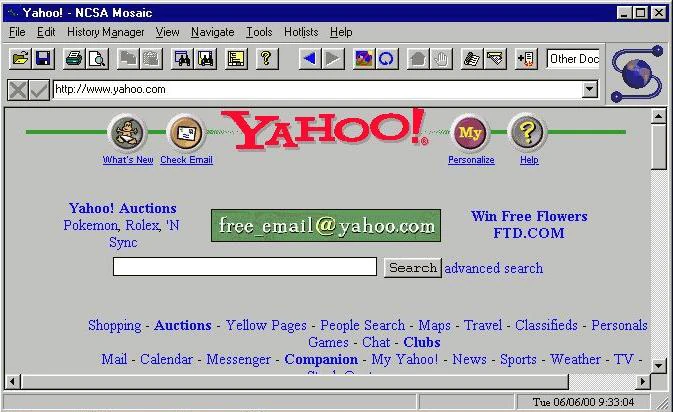
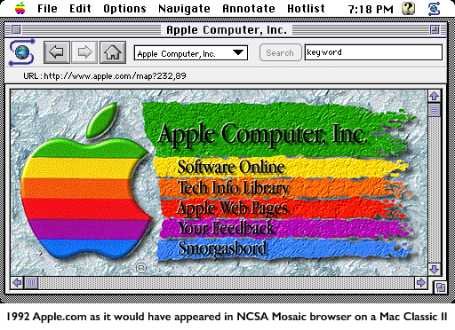

📋 Resumo
Se em 1983 o TCP/IP unificou as redes e se em 1989–1991 Tim Berners-Lee criou a Web, então 1993 foi o ano em que a internet ganhou olhos, rosto e personalidade. Um ano em que tudo mudou — não por causa de uma nova teoria ou invenção isolada, mas porque algo crucial aconteceu: a Web se tornou navegável por qualquer pessoa, e isso alterou para sempre a trajetória do mundo digital.
📚 Detalhes
Até 1992, a Web existia, mas era essencialmente um ambiente de nicho. Havia poucos sites, poucas ferramentas e quase ninguém fora de universidades sabia usá-la. O único navegador gráfico disponível era o WorldWideWeb de Berners-Lee, exclusivo para máquinas NeXT — computadores caros e raros, muito distantes do uso popular. A maioria das pessoas acessava a internet através de interfaces de texto, comandos complexos e visualizações limitadas. A navegação era lenta, nada intuitiva e exigia conhecimento técnico. Não havia cores, imagens integradas, menus, barras de navegação nem nada que lembrasse a experiência moderna. A Web precisava desesperadamente se tornar atraente, visual e simples.
Foi nesse cenário que surgiu o NCSA Mosaic, criado por Marc Andreessen e Eric Bina no National Center for Supercomputing Applications (NCSA), na Universidade de Illinois. Lançado em 1993, o Mosaic se tornou rapidamente o “primeiro navegador amigável da história”. Ele foi o primeiro programa a integrar, em um mesmo espaço visual, texto, imagens, hiperlinks, formulários e botões clicáveis. Pela primeira vez, um usuário comum conseguia abrir uma página web e interagir com ela de forma natural, quase intuitiva, sem precisar escrever comandos. A Web se transformava em um ambiente visual — e isso a aproximou do grande público.
A grande revolução trazida pelo Mosaic não foi apenas técnica, mas simbólica. Pela primeira vez, imagens podiam aparecer dentro da página, e não como arquivos externos separados. Isso mudou completamente a forma como o conteúdo era apresentado. Pela primeira vez, era possível imaginar sites coloridos, com ilustrações, mapas, gráficos, fotos — um mundo digital que dialogava com a cultura visual da época, marcada pelo crescimento das revistas ilustradas, programas de TV, propagandas e interfaces gráficas populares nos computadores domésticos. O Mosaic tornou a Web acessível, comercialmente atraente. Ele não apenas possibilitou sites: ele possibilitou o desejo de criar sites.

Do ponto de vista técnico, o Mosaic foi engenhoso porque se apoiou em tecnologias abertas. Ele utilizava HTTP, HTML e TCP/IP — todos padrões já criados por Berners-Lee e mantidos de forma livre. Isso significa que qualquer servidor podia hospedar páginas que qualquer navegador podia ler. Essa abertura gerou uma onda de experimentação global. Universidades, laboratórios, empresas, entusiastas, jornalistas, bibliotecas, artistas e estudantes começaram a criar seus primeiros sites, e a Web deu um salto de poucas dezenas de páginas para milhares em questão de meses.
Em 1993 também ocorreu outro marco crucial: o CERN liberou o código da Web para uso público e gratuito, sem patentes, sem royalties e sem restrições. Essa decisão, tomada oficialmente em abril de 1993, é um dos atos mais generosos da história científica. Ao abrir o código, o CERN garantiu que grandes corporações não monopolizassem a Web, permitindo que ela crescesse como um bem comum global. Sem essa decisão, a internet poderia ter se tornado uma rede proprietária, fragmentada, paga e limitada — algo parecido com sistemas corporativos privados da época.
Em termos culturais, 1993 também coincidia com o início do boom dos computadores pessoais multimídia. A Apple já tinha o Macintosh com interfaces gráficas sofisticadas; a Microsoft ganhava cada vez mais espaço com o Windows; e novos consumidores estavam comprando computadores para casa, impulsionados pela popularização dos CD-ROMs, jogos eletrônicos, enciclopédias digitais e softwares educativos. A Web, visual e intuitiva graças ao Mosaic, encaixou-se perfeitamente nesse cenário cultural. De repente, estar “online” deixava de ser um hábito acadêmico e se tornava um desejo para qualquer pessoa curiosa.

Além disso, 1993 foi um ano decisivo para a abertura da internet e a expansão de sua infraestrutura. No mesmo período, a NSFNET — rede acadêmica patrocinada pela National Science Foundation — começou a permitir que empresas e provedores privados se conectassem. Era o início da transição da internet acadêmica para a internet comercial. A partir desse momento, provedores de acesso à internet (ISPs) começaram a surgir nos EUA, e empresas começaram a perceber o potencial de possuir presença na Web. Esse processo seria acelerado ao longo dos anos 1990, culminando na explosão das empresas “.com” no final da década.
O impacto cultural do Mosaic foi tão profundo que ele não apenas popularizou a Web: ele inspirou um movimento inteiro. Em pouco tempo, seu criador Marc Andreessen seria contratado por Jim Clark para fundar a Netscape, empresa que daria origem ao Netscape Navigator — o navegador dominante dos anos 1990 e responsável direto pela criação da economia digital que conhecemos hoje. Muitos historiadores dizem que o Mosaic é o “pai dos navegadores modernos” e o “acendedor da fagulha” que transformou a Web de uma curiosidade científica em uma ferramenta global de comunicação.
Também é importante lembrar que 1993 antecede o surgimento dos grandes portais, buscadores e redes sociais, mas plantou todas as bases para que esses elementos florescessem. A ideia de “página inicial”, “hiperlinks”, “multimídia”, “design web” e “navegação gráfica” nasce aqui. O mundo inteiro começava a perceber que a Web não era apenas um repositório de documentos, mas um espaço vivo — um lugar onde pessoas podiam construir identidades, comunidades, empresas e ideias.
Em poucas palavras, 1993 foi o ano em que a internet deixou de ser invisível. Foi quando a Web ganhou forma, cor e movimento. Foi o momento em que o mundo pôde ver, pela primeira vez, o que a internet poderia se tornar. E, a partir dali, nada mais seria igual.
The Machine That Changed the World (PBS) – episódios sobre Mosaic e a Web inicial
playlist: https://www.youtube.com/playlist?list=PLpmRf-WEFN_g-hzeWyDABqzDiF6CgGt1t
.🔗 Fontes de Pesquisa